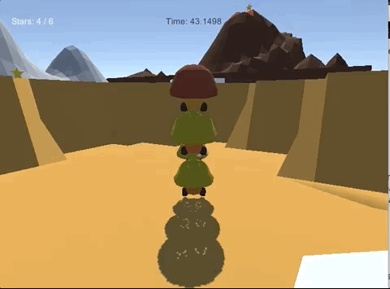
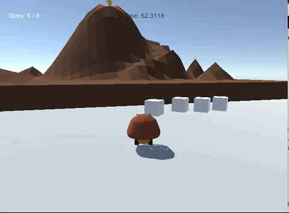
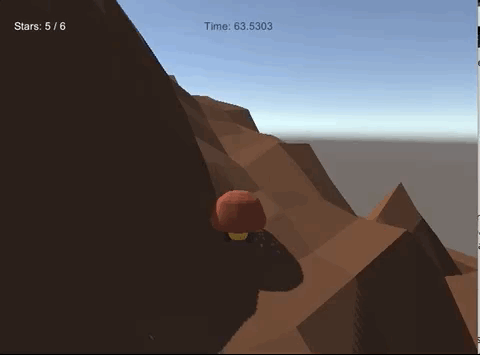

In the past few years, I've become very interested in game development. I've mostly used Blender for asset creation and animation, and Unity as the game engine. My interests lie in gameplay programming, particularly with battle systems, combat mechanics, movement mechanics, and physics. I don't have much artistic skill, but animation also interests me.
This section will showcase some of the games I've worked on in the past few years.
Mushroom Jump was based on the 3D Super Mario games. I thought it was time that the little mushroom creatures took on the spotlight, so I made them the main character of this platformer. The goal is to collect all of the stars. In this game, the mushrooms creatures are your friends, not enemies. Together, you can reach new heights (quite literally).
| WASD | Move |
| IJKL | Look |
| SPACE | Jump |
|---|---|
| Q | While stacked on top of mushrooms, Q will let you jump off the stack |
| U (hold) | Grab (you can only grab the boxes) |
| ESC | Exit |
Tools used: Unity, Blender
I built this game in Nov 2017 during a Hackathon at work. I was really interested in the stacking mechanic from the most recent Mario game, so I built this game around that game mechanic. Stacking is necessary to reach high places that can't be reached through normal jumping. I built the assets and animated with Blender.
Check out the code here.
Download and play it here.
Stack to get higher
Grab and move boxes
Collect all the stars to win!
In Rock Paper Scissors, you are a rock that can magically transform into a paper airplane, or a pair of scissors! The goal is to collect the keys to open the door to the next room. Beware of attacking snails!
| WASD | Move |
| IJKL | Look |
| SPACE | Jump/Fly |
|---|---|
| ENTER | Attack |
| 1 | Transform into a rock |
| 2 | Transform into a paper airplane |
| 3 | Transform into a pair of scissors |
| ESC | Exit |
Tools used: Unity, Blender
I built this game over a weekend in May 2017. I was interested in learning how animations worked, so I decided to build a platformer around it. The transformation mechanic was interesting to me, which is why I decided on the Rock Paper Scissors theme. It isn't as clean as Mushroom Jump, but it was a fun game to make. Most of the assets were from the Unity Asset store here. I created and animated the player/enemies, keys, door, and a few more small objects.
Check out the code here.
Download and play it (Warning, it's not very polished) here.
Attack enemies

Transform and fly

Collect all the keys to open the door